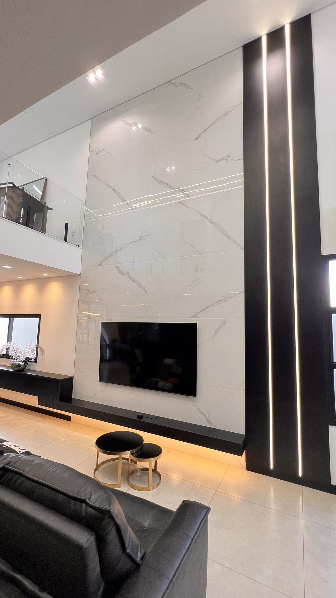
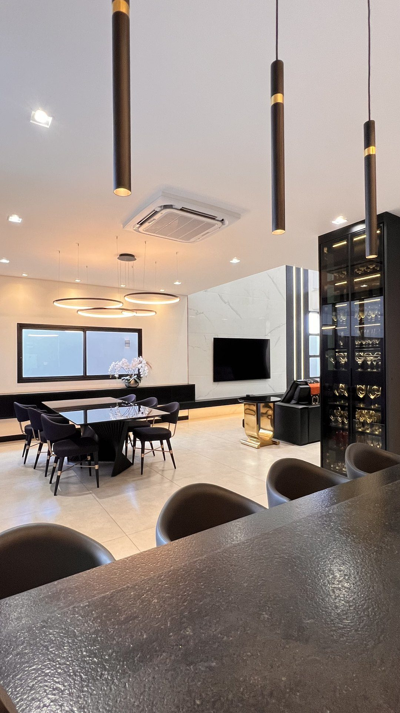
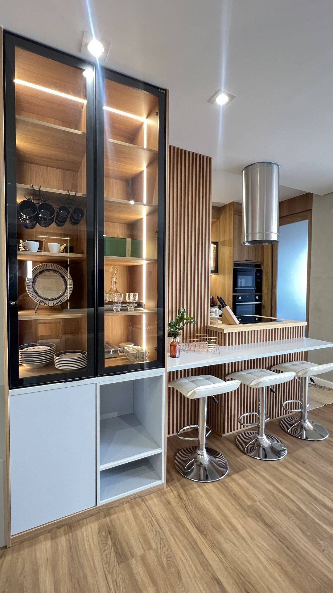

Quem é a Villa
Fundada em 2017, a Villa Mobiliário Sob Medida nasceu como uma modesta marcenaria em São Carlos e se transformou em referência regional em móveis planejados. Guiados por uma busca incansável por qualidade e acabamentos impecáveis, investimos em tecnologia e maquinário industrial para criar ambientes que unem design, funcionalidade e sofisticação.
Somos especialistas em materializar o sonho de cada cliente em móveis feitos exclusivamente para o seu espaço, com atendimento próximo, exigência técnica e entrega confiável.

À frente da Villa
O casal fundador conduz pessoalmente a cultura da casa: proximidade com o cliente, exigência técnica e o cuidado de tratar cada projeto como se fosse o próprio lar. É essa presença que sustenta a reputação de zero reclamações construída ao longo dos anos.
Reconhecimento
Loja mais bem avaliada de São Carlos e região, reflexo do cuidado com cada projeto.
Presença na maior mostra de arquitetura, paisagismo e design de interiores da América Latina.
Mais de 700 clientes atendidos com reputação impecável no Reclame Aqui.


Estrutura própria
Equipe e frota de entrega próprias garantem que quem planeja é quem entrega. Cada projeto ganha um Book Técnico detalhado, ferragens Häfele alemãs em todas as peças e o acompanhamento da instalação até o check-list final. É assim que sustentamos o menor prazo de entrega do mercado sem abrir mão do acabamento milimétrico.